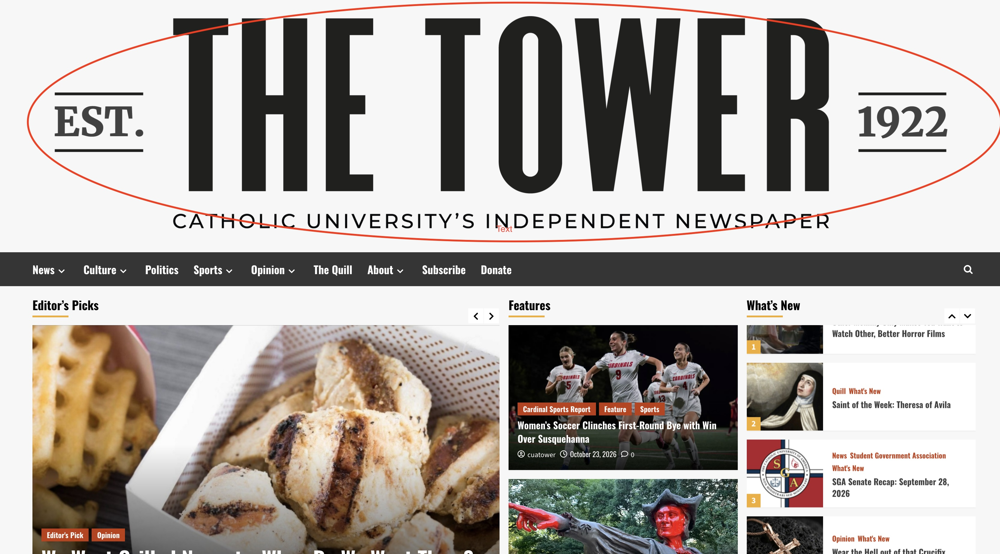
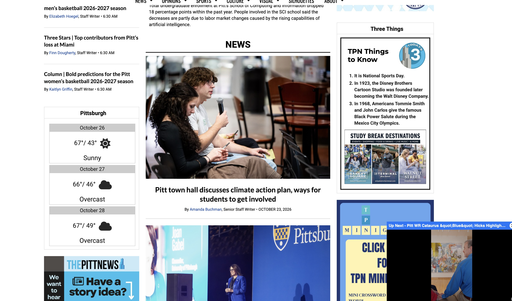

| Inputs | Outputs |
|---|---|
| Entering keyword "Sports" into the search bar | 43 pages worth of results |
| Entering keyword "Music" into the search bar | 72 pages worth of results |
| Entering keyword "Reviews" into the search bar | 11 pages worth of results |
| Entering keyword "CUA" into the search bar | 189 pages worth of results |
Heuristic #1: Visibility of Systems Status: Didn’t run into a situation where the site was loading for longer than maybe two seconds; there was the loading sign in the website tab, not the site itself
Heuristic #2: Match Between System and the Real World: No jargon, menu that’s there is well-labeled
Heuristic #3: User Control and Freedom: The Tower logo is always at the very top of the page no matter what you click on, so you always have a way of returning to the home page

Similarly, the menu bar can be found at the top of the page as well as at the very bottom; it doesn’t follow you as you read articles which I think is good because I can see that becoming distracting
Heuristic #4: Consistency and Standards: Needs an expanded menu (a lot of the headers are very general and end up providing pages and pages of results of stuff you’re not even looking for)
Results from search bar are out of order
If you don’t search up a keyword exactly as it appears in the article, it won’t show up (for example, searching “minority” will not bring up articles with “minorities” in the title)
Heuristic #5: Error Prevention: Didn’t run into any errors
Heuristic #6: Recognition Rather Than Recall: The search bar saves previous searches
Heuristic #7: Flexibility and Efficiency of Use: No real customization; don’t see any language options
Heuristic #8: Aesthetic and Minimalist Design: The site itself is very clean and not cluttered with tons of irrelevant information (below is the homepage of The Pitt News, another university newspaper whose homepage is significantly more cluttered.)

Heuristic #9: Help Users Recognize, Diagnose, and Recover from Errors: No need for error messages
Heuristic #10: Help and Documentation: No FAQ or Help page (they have an “About” page, but all it shows is the current staff)
Overall, I think that the site does well in heuristics #3 and #8, but heuristics #4 and #10 could use some improvement. It’s good that users can always find their way back to the homepage by clicking the logo, and the same can be said about the menu bar being readily available at both the top and bottom of the page. The overall design of the page is minimalistic and not busy, which will help in ensuring that users are not too overwhelmed when browsing. Despite these good qualities, there is still room for improvement. The search bar is quite limited, and results can vary even if you put in a specific keyword. I also thought it was strange that the results weren’t displayed chronologically. Lastly, I think a help page of some sort would be a great addition, especially if there were users with accessibility needs who want to learn how to make the site more accommodating.
While analyzing the findings of the usability test, I noticed that my participant and I had similar opinions, especially in regard to the things we liked about The Tower website. For one, we both appreciated the site’s aesthetics. In her questionnaire, the participant noted that the “articles were concise with colorful pictures”, and she verbally mentioned how the site is both simple and informative. I definitely think that the site’s aesthetics is one of its strongest points. The participant also did not run into any system errors, and was able to find her way back after getting to a place on the site that she didn’t mean to go to. The usability test also brought up potential areas for improvement. While navigating the monthly archive, the participant experienced some confusion when it came to differentiating between current and archival articles. She initially thought that after clicking on one of the previous months in the archive dropdown menu and seeing all the results, she could use the menu at the top of the page to navigate through the various articles. However, the menu bar at the top is only linked to current articles. For example, if she was looking through articles from August of 2020, and wanted to find the ones that related to sports, she couldn’t click on the “Sports” section of the menu bar because that would show her sports-related articles from the most recent edition of the newspaper. She thought that was a little confusing and made it necessary for users to click through all the articles in a respective month to find what they’re looking for.